What work can these systems perform, and what must the manager still supply and judge?
Model settings for today Claude Enterprise · Opus 5 · effort: Low in Exercise One, effort: Medium in Exercise Two
Today
- 01What do we mean by "AI"?
- 02Make somethingHands on
- 03How a model comes to be
- Break, ten minutes
- 04Build your assistantHands on
- 05From model to system
After class, optional
Customer Signal A vibe-coded review analyzer to evaluate; the brief is on its page.Before class
Read Prompting Is Briefing and the one-page cheat sheet. Both were sent to you separately. Bring a charged laptop signed in to Claude Enterprise, and your EMBA orientation materials as files on it.
No analytics. Nothing you type on this site leaves your browser.